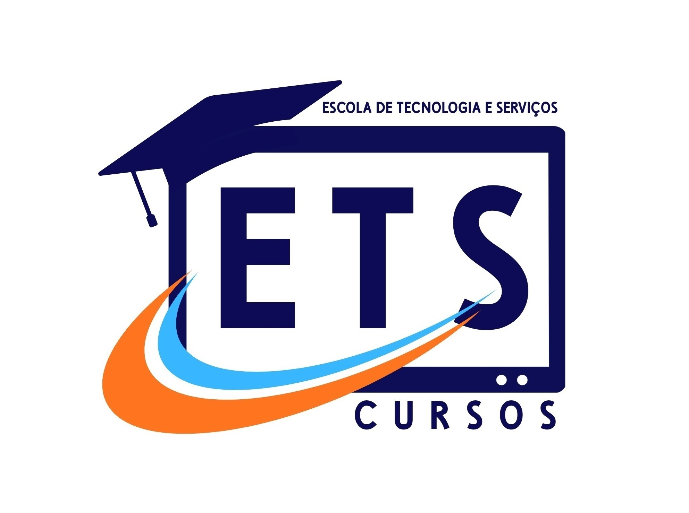

Desejo & Aspirações
Sou Estudante de programação Front-end
Me chamo Josinaldo Ursulino Gomes, tenho 46 anos e sou um estudante de desenvolvimento de software, e estou aprendendo HTML, CSS e JavaScript.
Estou muito feliz por estar aprendendo a programar, e espero me tornar um desenvolvedor de software de sucesso no futuro.
Ansioso para aprender mais sobre as tecnologias de desenvolvimento de software e para criar projetos incríveis.
Meus objetivos para 2026
- Aprender a programar em HTML, CSS e JavaScript
- Desenvolver projetos de software para web
- Conseguir ficar competente em programação para melhorar minha vida e de minha família
- Mudar minha mentalidade e ser melhor como pessoa e servo do Senhor
Clique no botão abaixo para abrir meu blog:
As Pessoas que eu Acredito Acreditam em Mim
- Jane - minha esposa
- Minha filha - Ester
- Minha filha - Rute
- Meu filho - Misael
- Minha filha - Ana
- Meu filho - João
- Minha mãe - Irene
- Minha irmã - Iolanda
- Outros amigos e familiares que não sabem de minhas aspirações
 Foto da recordação escolar
Foto da recordação escolar
Esse foi o projeto inicial
CLIQUE NO LINK ABAIXO E VEJA COMO FOI O PROJETO INICIAL